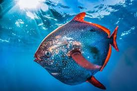

pesce re
Si tratta di una specie cosmopolita, diffusa in tutti i mari e gli oceani, con l'eccezione di quelli polari. Nel mar Mediterraneo è complessivamente raro, ma presente in tutti i mari italiani ed, in generale, nel bacino occidentale. Il suo stile di vita è pelagico e si incontra in acque aperte fino a circa 400 metri di profondità.
Ha un aspetto assolutamente caratteristico per il corpo molto alto e molto compresso lateralmente. La testa è relativamente piccola ed anche gli occhi e la bocca non hanno grandi dimensioni, è totalmente privo di denti. La linea laterale presenta una brusca curva dietro la testa. La pinna dorsale, unica, è lunga ed ha un vistoso lembo triangolare alla sua estremità anteriore, la pinna anale è più breve e senza lembo, la pinna caudale è leggermente forcuta, le pinne ventrali sono abbastanza grandi ed inserite in posizione arretrata, le pinne pettorali sono piuttosto ampie e sono poste in verticale, subito dopo l'opercolo branchiale. La sua colorazione è molto vivace, rosso vivo con fianchi e dorso bluastri, cosparsi di numerose macchie rotonde biancastre. Le pinne sono rosso vermiglio e così la bocca e l'iride degli occhi. Raggiunge dimensioni ragguardevoli, fino a più di 2 metri per oltre 100 kg. Una specie estinta, di dimensioni gigantesche, è Megalampris keyesi.